This report discusses about using deep learning to train convolutional neural networks and categorize the 15 scenes data using them. It starts with describing how a neural network can be built from scratch - different kinds of layers involved in it, effects of improving diversity of image data using jittering, etc. It then goes on to talk about using a network pre-trained on imagenet-VGG dataset, fine tuning it, and testing the classification results on 15 scenes data.
The code provided with a network contaning one convolutional layer, a pooling layer, a rectified linear layer, and another convolutional layer gives an accuracy of around 29%.
The plots for results and filter visualizations can be seen below.
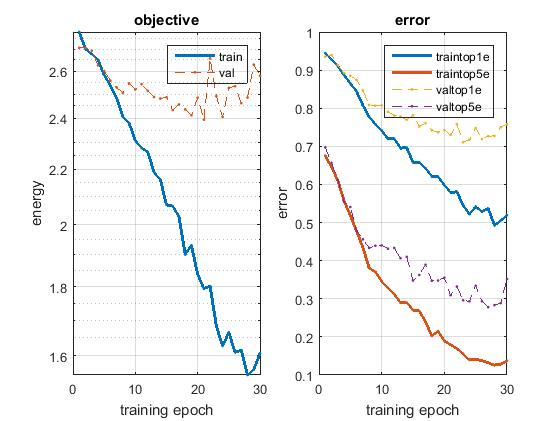 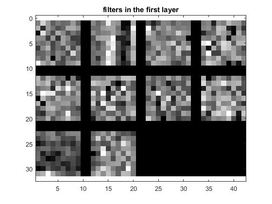It can be seen from the filter that none of those look like proper edge detectors. The reasons for this rather poor performance could be - not enough training data, not enough epochs (used only 50 here), not enough depth in network, maybe the network is prone to overfitting. We try to analyse each of these problems in the below sections.
The dataset contains just 1500 images of scenes from 15 categories. One way to improve the diversity and the amount of training data is to modify the existing images in such a way that the label will still remain the same. A flip about the vertical separator in the middle of the image will result in an image which matches this criterion. This process is called "jittering". After implementing this mirroring, the accuracy improved by 10% over baseline in above section to 39%.
The plots for results and filter visualizations can be seen below.
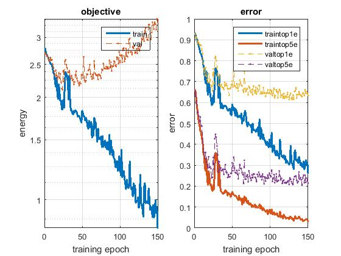 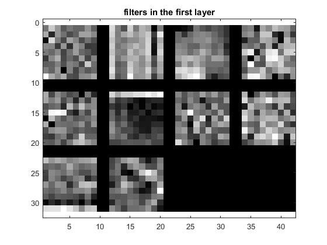The number of iterations used here is 150, since the network gets to train on almost similar data multiple times, it learns much better than it would otherwise. However, this kind of ovefits the network to training data, so as can be seen from the graph above, the training error comes down far more rapidly than the validation error.
Scene recognition is mainly done using filters for edge detections and their orientations. Fundamentally, this is a part of the foreground of an image, and the background of an image doesn't play a role in this. Background can be removed from an image by subtracting the mean of all images in dataset from each of the training and testing images. The results of this change result in a further increase of 13% in accuracy over the previous section, with a value of around 52%.
The plots for results and filter visualizations can be seen below.
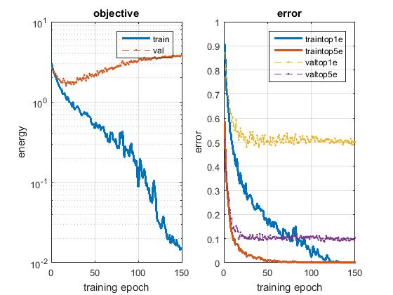 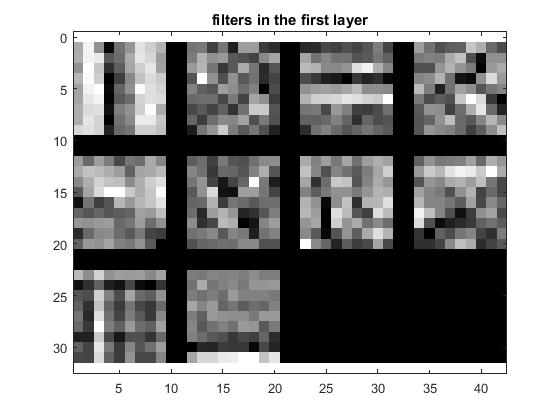It can be seen from the above filter image that some of them actually look like horizontal and vertical edge detectors (filters which have rows with full dark and bright rows or columns).
As we have seen in the above sections, the improvements have resulted in a rapid fall in error for training set, but a rather slower fall in error for the validation error. This basically indicates that the network is overfitting to the training data. One way to limit this effect is to disconnect a few connections in the fully connected layers of the network, resulting in reduction of number of features passed to the further layers in the network. Therefore, the information learnt by network is limited in a sense.
The plots for results and filter visualizations can be seen below.
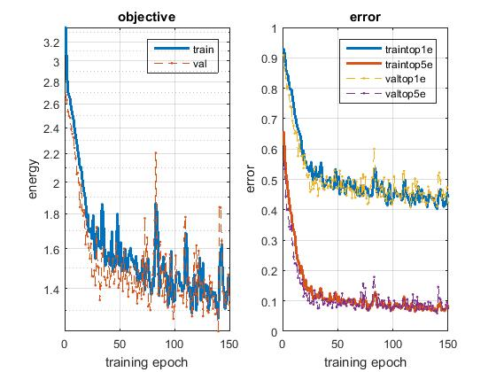 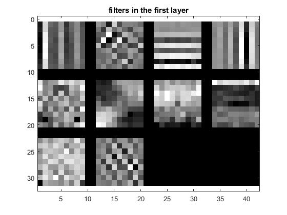As expected the accuracy increased after regularization increased to ~60%. It can be observed in the graph above that now the training error reduces but at a smaller rate compared to the above section. This essentially proves that overfitting is controlled. Also, the filters have a much more pronounced edge detectors.
Ideally we expect a network to learn the weights better and perform more accurate classification as we increase the number of layers in it. An experiment of addition of a convolution layer and pooling layer to the network has been done. The existing network has also been modified for the pooling width, stride etc such that after addition of the new layers also the ultimate data size of output of the final convolution layer is 1. The new network structure is depicted in the image below.
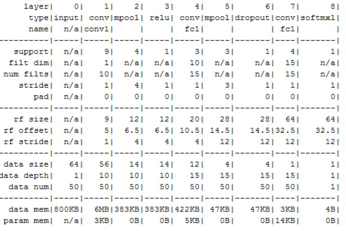The plots for results and filter visualizations can be seen below.
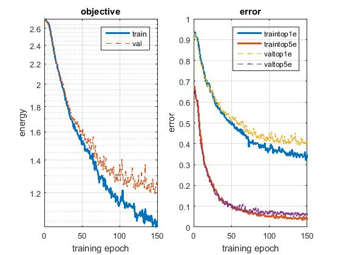 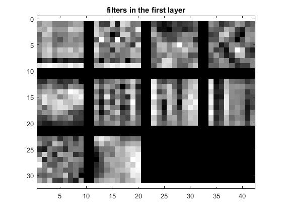Surprisingly, the accuracy has only increased by ~0.6% compared to the above section to ~60.6%. The reason for this could be that even though the network is data, the amount of data and its diversity (~3000 distinct images) is not enough to extract that advantage from it.
A pre-trained network called the imagenet-vgg-f is used for training and testing the 15 scene data. Advantages of using a pre-trained network is that the weights of layers have already been optimized for that particular dataset, and not random. Since the network is as deep as 21 layers and trained on reasonably large amount of data these weights are converged to optimal values. This also forms a good setup to be fine-tuned - provided we add/modify a few layers in it.
For tuning the network, the last two layers (fc8 and softmax) have been removed. The idea is to replace them with a layer with a data depth of 15 (one for every scene category) instead of 1000 ImageNet categories. Since a dropout layer is missing from the original network, one has been added before the fc8 layer to take care of the overfitting problem.
The VGG-F net expects an RGB image as input. Since the 15 scene database only has greyscale images, these have been concatenated to 3 dimensions to make an equivalent RGB image. Also, zero-centering has been done using the net.normalization.averageImage as the mean image.
The results for fine tuning the pre-trained network can be seen below.
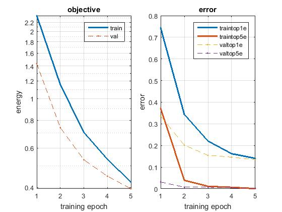 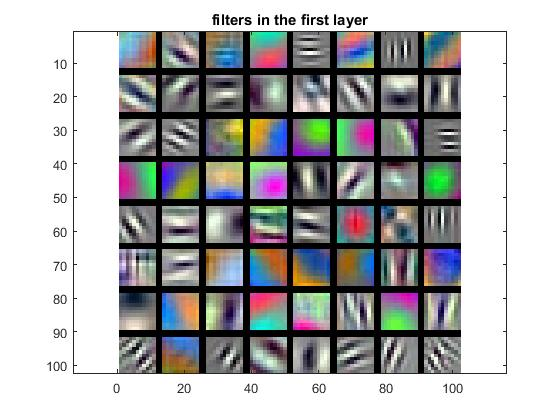Since the network is 22-layer deep and pre-trained as well, the accuracy is expected to be high. This is evident from the results, 86.6% accurate. The filters also are extensively edge detectors oriented in various directions, both black and white as well as colored.